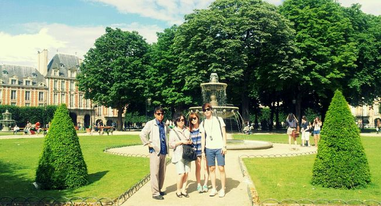
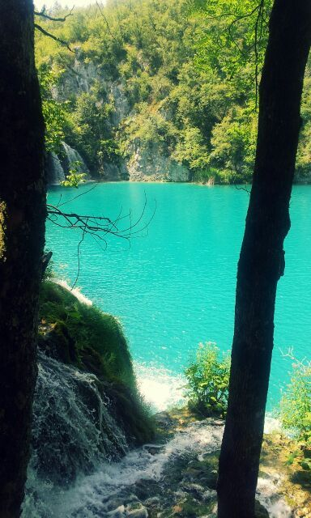

EUROPE TRAVEL


- 2012년 7월 24일 아버지가 계신 유럽으로 가족여행!!!
- 2012년 7월 25일 프랑스 파리도착!!! 몽파르스 호텔로 이동
- 2012년 7월 26일 파리 시내 샹젤리제 거리 쇼핑 후 몽마르뜨 언덕 관광.
- 2012년 7월 27일 루브르 박물관 입성!!! 모나리자, 나폴레옹 초상화, 비너스 상등 명화 감상
- 2012년 7월 28일 파리에서 빼놓을수 없는 에펠탑 관광!! 센느강에서 유람선을 타고 에펠탑과 파리의 멋진 야경 관광
- 2012년 7월 29일 아버지가 사시는 체코로 이동!!
- 2012년 7월 30일~ 8월 5일 까지 체코 프리데크미스테크 도시에서 휴식 및 관광
- 2012년 8월 6일 크로아티아 여행을 위해 체코에서 출발
- 2012년 8월 7일 장시간 자동차 여행으로 슬로바키아에서 하루 숙박
- 2012년 8월 8일 크로아티아 입성!! 크로아티아 수도 자그레브브에서 구시장 관광
- 2012년 8월 9일 크로아티아 목적지 두브로브니크에 도착 최고의 해양도시에서 수영과 배낚시를 즐김
- 2012년 8월 10일 두브로브니크에서 맞이하는 두번째 날 중심시내거리에서 공연 관람 후 크로아티아식 식사
- 2012년 8월 11일 크로아티아 플리트비체에 도착 후 휴식
- 2012년 8월 12일 체코로 돌아가는길에 오스트리아 빈에 도착후 판도로프 아울렛 쇼핑
- 2012년 8월 13일 체코 도착
- 2012년 8월 14~ 8월 22일 까지 가족들과 체코에서 단란한 시간을 보냄
- 2012년 8월 23일 첫 유럽 여행을 뒤로하고 인천공항에 도착.
뒤로가기
친구추가